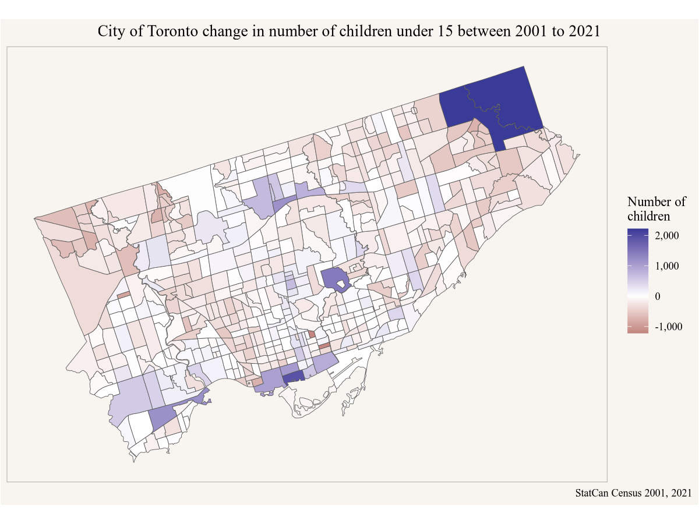

11 Toronto children
We keep reading in the news that the number (and share) of children under the age of 15 declined in the City of Toronto, a fate that’s shared by the City of Vancouver. But is this happening uniformly across the city or are the geographic differences?
11.1 Question
Where in Toronto is the number (and share) of children under 15 decreasing, and where is it increasing?
11.2 Data sources
In Canada have data on the number of children from two main data sources and their derived products. The census and T1FF taxfiler data. Both are available at sub-city level, although that’s a custom tabulation for T1FF taxfiler data. For this post we will go with census data since the T1FF custom tabulations we have on CensusMapper only go up to 2018.
11.3 Data acquisition
Since we are looking at comparing census data over time, and census geographies change over time, we will rely on tongfen to harmonize the census geographies. As the base we will use census tracts. We can use the CensusMapper API GUI to select the vectors we need, the children under 15 in 2021 and the children under 15 in 2001, assembled from 5 year age groups for males and females.
We still need to get the region identifier for Toronto, either by using the CensusMapper API GUI or searching for it using the cancensus package.
Code
library(cancensus)
search_census_regions("Toronto","CA21")# A tibble: 3 × 8
region name level pop municipal_status CMA_UID CD_UID PR_UID
<chr> <chr> <chr> <int> <chr> <chr> <chr> <chr>
1 35535 Toronto CMA 6202225 B <NA> <NA> 35
2 3520 Toronto CD 2794356 CDR <NA> <NA> 35
3 3520005 Toronto CSD 2794356 C 35535 3520 35 Now we have everything in place to get the data on a harmonized geography based on census tracts.
Code
toronto_children <- get_tongfen_ca_census(regions=list(CSD="3520005"), meta=meta,
level = "CT", na.rm = TRUE)11.4 Data preparation
This time around we have a little bit of data preparation to do, we need to add up all the children from the age and gender groups for 2001.
Sometimes it can be tedious to spell out all the variables we want to add up, and we can use more abstract selections to specify what and how to add. In this case that’s complicated by also having geographic data attached, that we need to drop in order to perform row wise summation on our variables of interest. For reference, here is an alternative way to perform this summation that generalized to more complex scenarios.
11.5 Analysis and visualization
Here we need to simply map the difference in children.
Code

Another view into this is to look at the change in the share of children in each region between these years.
Code
ggplot(plot_data, aes(fill=children_2021/Population_CA21-children_2001/Population_CA01)) +
geom_sf() +
scale_fill_gradient2(labels=scales::percent) +
coord_sf(datum=NA) +
labs(title="City of Toronto change in share of children under 15 between 2001 to 2021",
fill="Percentage\npoint\nchange",
caption="StatCan Census 2001, 2021")11.6 Interpretation
The share of children has decreased in most areas, which is to be expected as Canada’s overall age distribution shifts with people living longer and baby boomers aging into the retirement age. This means that if we want to keep the other age groups, we need to make more space for them.
Looking at the map with the absolute change in children we see that there are several areas where we did manage to make space for a shifting age distribution, and the total number of children increased even as their share decreased.
Additionally we see areas where not just the number but also the share of children increased. These are typically areas dominated by denser housing that traditionally weren’t attractive to families with children. But with increasing constraints on housing availability the only alternative is to commute into the city from increasingly longer distances, and living in family-sized apartments in the central parts is increasingly becoming an attractive alternative.